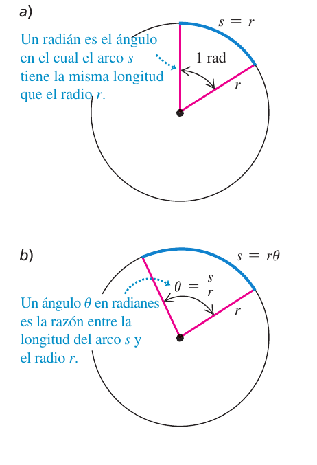
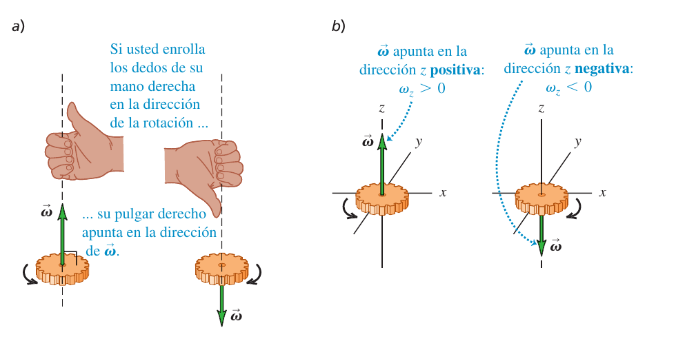
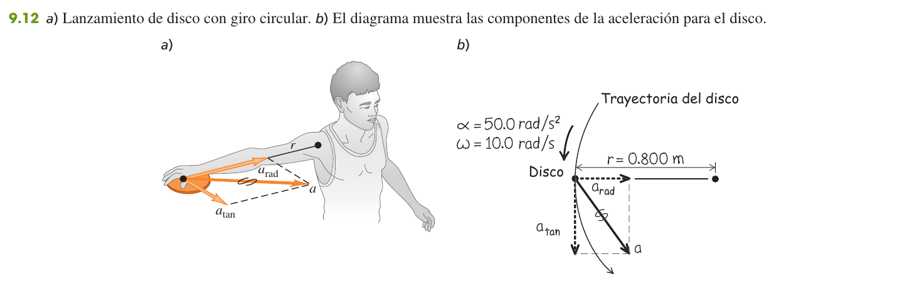
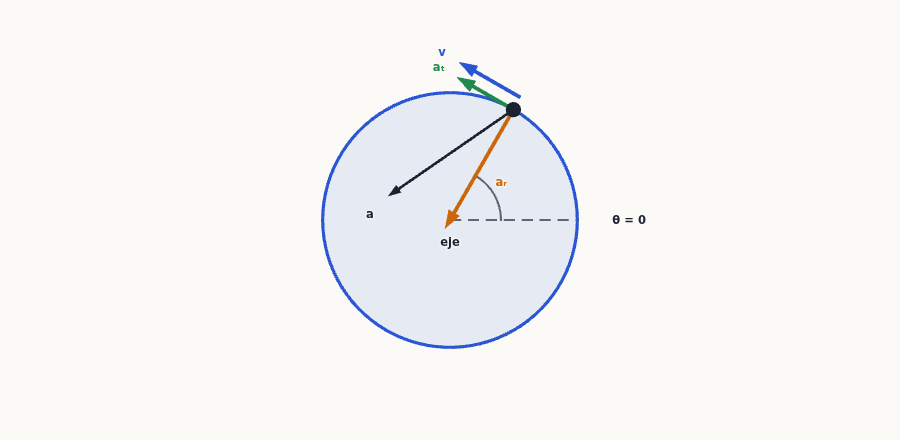
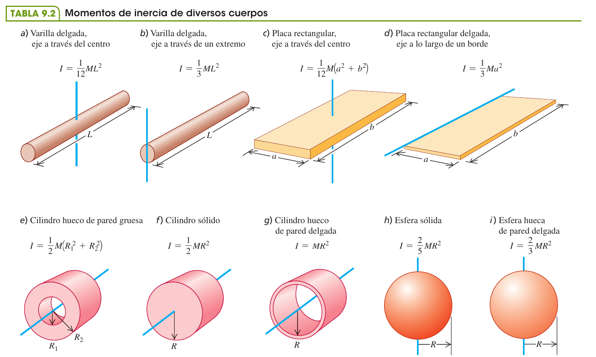
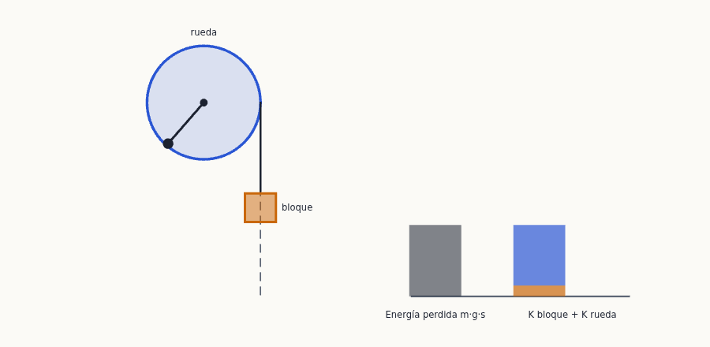
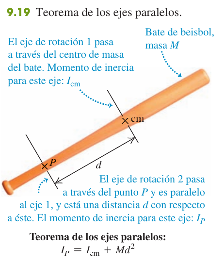
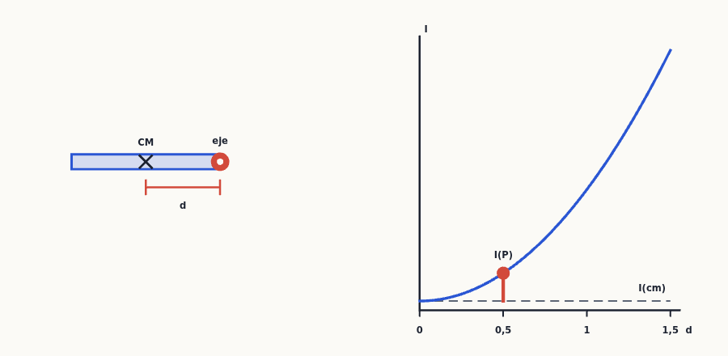

Rotación de cuerpos rígidos
Hasta ahora has tratado los cuerpos como puntos. Aquí un cuerpo gira: aprenderás a describir ese giro con ángulos, velocidad y aceleración angulares (la cinemática es casi un calco del movimiento rectilíneo), a ligarlo con lo que le pasa a cada punto del cuerpo, y a calcular su energía de rotación con una nueva cantidad: el momento de inercia, que hace en la rotación el papel de la masa.
0Antes de empezar U p.274
Prerrequisitos: el movimiento rectilíneo con aceleración constante y sus cuatro ecuaciones (tema 2), porque la rotación con $\alpha$ constante es exactamente lo mismo con otras letras; el movimiento circular uniforme y la aceleración centrípeta $a_{rad}=v^2/r$ (tema 3); derivar polinomios sencillos (para $\omega=d\theta/dt$); la energía cinética y la conservación de la energía (temas 6 y 7); y el centro de masa (tema 8).
Mapa del tema: 9.1 define el ángulo en radianes, la velocidad angular $\omega_z$ y la aceleración angular $\alpha_z$. 9.2 da las ecuaciones de la rotación con $\alpha_z$ constante (tabla 9.1: calco del MRUA). 9.3 relaciona lo angular con lo lineal de cada punto: $v=r\omega$, $a_{tan}=r\alpha$, $a_{rad}=r\omega^2$. 9.4 introduce el momento de inercia $I=\sum m_ir_i^2$ y la energía cinética de rotación $K=\tfrac12I\omega^2$, con la tabla 9.2 de cuerpos habituales. 9.5 es el teorema de los ejes paralelos $I_P=I_{cm}+Md^2$ y 9.6 enseña a calcular $I$ por integración.
No hay ningún problema de examen de 3 puntos de este tema en los exámenes revisados: los problemas de rotación que han caído mezclan fuerzas y momentos de fuerza y son del tema 10. Lo que sí apareció son dos cuestiones cortas de cinemática y energía de rotación dentro de la pregunta de teoría de Febrero 2025 (2ª semana), P-3 Opción A, apartados (a) y (b) (ruedas de un carro que baja una pendiente; volante con $\omega$ constante). Esa pregunta, en conjunto, es del tema 10 (su tema a desarrollar es «Trabajo y potencia en un movimiento de rotación»); aquí solo se resuelven sus cuestiones (a) y (b). Están resueltas como X1, y con ella se practican las ideas centrales: componentes de la aceleración de un punto y reparto de la energía entre traslación y rotación. El grueso de la práctica son los 10 bloques del solucionario (E) resueltos al final.
| Cuestión de examen real | Ejercicio de esta página |
|---|---|
| Feb 2025 (2ª sem.) P-3 Opción A (b) — volante con $\omega$ constante: ¿aceleración tangencial? ¿radial? ¿magnitud y dirección constantes? | X1 (b) |
| Feb 2025 (2ª sem.) P-3 Opción A (a) — carro de cuatro ruedas cuesta abajo: ruedas grandes y pesadas o pequeñas y ligeras; sólidas o con radios | X1 (a) |
- Fija el eje y el sentido positivo. Normalmente el antihorario es positivo; $\omega_z$ y $\alpha_z$ llevan signo.
- ¿Es $\alpha_z$ constante? Si sí, usa las ecuaciones 9.7, 9.10, 9.11 y 9.12 como en el MRUA (elige la que contenga tu incógnita y no la que no conoces). Si $\theta(t)$ es otra función, deriva: $\omega=d\theta/dt$, $\alpha=d\omega/dt$.
- Si preguntan por un punto concreto a distancia $r$ del eje: $v=r\omega$, $a_{tan}=r\alpha$, $a_{rad}=r\omega^2$, y recuerda que los ángulos van en radianes.
- Si aparece energía, calcula $I$ (suma $m_ir_i^2$, tabla 9.2, ejes paralelos o integral) y usa $K=\tfrac12I\omega^2$ en $K_1+U_1=K_2+U_2$; si hay un cable que no resbala, $v=R\omega$.
- Comprueba unidades (rad/s, kg·m²), el signo y los casos límite.
1Velocidad y aceleración angulares U p.274
Un cuerpo rígido es uno que no se deforma: todas sus partes mantienen sus distancias. Cuando gira alrededor de un eje fijo (la aguja de un velocímetro, la rueda de una bici), basta un solo número para decir dónde está: el ángulo $\theta$ que forma con una referencia, igual que $x$ te dice dónde está un coche en una carretera. La velocidad angular es «cuántos radianes gira por segundo» (como la velocidad es cuántos metros recorre por segundo) y la aceleración angular es cuánto cambia eso por segundo. Lo bonito: todos los puntos del cuerpo comparten el mismo $\theta$, $\omega$ y $\alpha$, aunque cada uno recorra una distancia distinta.
U p.274-275El ángulo $\theta$ en radianes es la razón entre la longitud del arco $s$ y el radio $r$: $$\theta=\frac sr\qquad\text{o bien}\qquad s=r\theta\qquad\text{(ec. 9.1)}$$ Es un número puro (arco entre radio). Una vuelta completa mide $2\pi$ rad, así que $1\ \text{rad}=360^\circ/2\pi=57{,}3^\circ$, y $1\ \text{rev/s}=2\pi$ rad/s, $1\ \text{rpm}=2\pi/60$ rad/s. Un ángulo positivo se mide en sentido antihorario desde el eje de referencia.
U p.274
Cuando una ecuación mezcla cantidades lineales y angulares ($s=r\theta$, $v=r\omega$, $a_{tan}=r\alpha$…), los ángulos deben ir en radianes. Por ejemplo, $s=(\pi/3)\,r$ es correcto y $s=60\,r$ no. Cada vez que veas «60°» o «rpm», conviértelo antes de operar.
U p.281La velocidad angular media es $\omega_{med\text{-}z}=\dfrac{\Delta\theta}{\Delta t}$ (ec. 9.2) y la instantánea
$$\omega_z=\frac{d\theta}{dt}\qquad\text{(ec. 9.3)}$$
La aceleración angular es $\alpha_z=\dfrac{d\omega_z}{dt}=\dfrac{d^2\theta}{dt^2}$ (ecs. 9.5 y 9.6); su media es $\Delta\omega_z/\Delta t$ (ec. 9.4). Unidades: rad/s y rad/s². Un $\omega_z>0$ significa giro antihorario (si ese es el sentido positivo) y $\omega_z<0$, horario; la rapidez angular $\omega=|\omega_z|$ nunca es negativa.
La rotación se acelera si $\omega_z$ y $\alpha_z$ tienen el mismo signo y frena si tienen signos opuestos.
Para describir el giro de todo el cuerpo con un solo vector, la velocidad angular se define como vector $\vec\omega$: su dirección es la del eje de rotación (perpendicular al plano en que giran las partículas) y su sentido lo da la regla de la mano derecha: si curvas los dedos de la mano derecha en el sentido del giro, el pulgar apunta en el sentido de $\vec\omega$. Con el eje $z$, $\omega_z>0$ cuando $\vec\omega$ apunta hacia $+z$ (giro antihorario visto desde $+z$) y $\omega_z<0$ cuando apunta hacia $-z$ (giro horario).
El vector aceleración angular es $\vec\alpha=d\vec\omega/dt$. Con el eje fijo, $\vec\alpha$ y $\vec\omega$ están ambos sobre el eje: $\vec\alpha$ es paralelo a $\vec\omega$ si la rotación se acelera y antiparalelo si se frena, que es la regla de los signos de $\omega_z$ y $\alpha_z$ vista con vectores. En este capítulo el eje no cambia de dirección y basta con las componentes $\omega_z$ y $\alpha_z$.

El vector $\vec\omega$ es perpendicular al plano de giro: no apunta hacia donde se mueve ninguna parte del cuerpo, y no es un «vector curvo» que siga la flecha circular. Es una propiedad de todo el cuerpo, y por eso se coloca sobre el eje, que es común a todas sus partes.
U p.276Decir «$\alpha_z>0$, luego gira cada vez más deprisa». Lo que importa es el signo relativo con $\omega_z$: si la rueda gira en sentido negativo y $\alpha_z>0$, está frenando. Y $\omega_z$ no significa que el cuerpo se desplace a lo largo del eje $z$: solo gira alrededor de él.
U p.275-277Un volante gira con $\theta(t)=(2{,}0\ \text{rad/s}^3)\,t^3$. Calcula $\omega_{med}$ entre $t=2{,}0$ s y $5{,}0$ s y las instantáneas.
- Ángulos. $\theta(2)=2(8)=16$ rad y $\theta(5)=2(125)=250$ rad.
- Media. $\omega_{med}=\dfrac{250-16}{5-2}=78$ rad/s (la pendiente de la cuerda de la gráfica).
- Instantáneas. Derivando, $\omega_z=6t^2$ (rad/s con $t$ en s): 24 rad/s en 2 s y 150 rad/s en 5 s. Derivando otra vez, $\alpha_z=d\omega_z/dt=12t$: 24 y 60 rad/s² en $t=2{,}0$ s y $5{,}0$ s. La aceleración media entre 2 s y 5 s es $(150-24)/3=42$ rad/s².
2Rotación con aceleración angular constante U p.278
Si ya sabes el movimiento rectilíneo uniformemente acelerado, ya sabes esto: cambia $x\to\theta$, $v_x\to\omega_z$, $a_x\to\alpha_z$ y las cuatro ecuaciones valen igual. (Tabla 9.1.) Un disco de Blu-ray que se frena al terminar la película es el ejemplo clásico.
U p.279| Movimiento rectilíneo ($a_x$ cte.) | Rotación ($\alpha_z$ cte.) | Lo que NO contiene |
|---|---|---|
| $v_x=v_{0x}+a_xt$ (2.8) | $\omega_z=\omega_{0z}+\alpha_zt$ (9.7) | $\theta$ |
| $x-x_0=\tfrac12(v_{0x}+v_x)t$ (2.14) | $\theta-\theta_0=\tfrac12(\omega_{0z}+\omega_z)t$ (9.10) | $\alpha_z$ |
| $x=x_0+v_{0x}t+\tfrac12a_xt^2$ (2.12) | $\theta=\theta_0+\omega_{0z}t+\tfrac12\alpha_zt^2$ (9.11) | $\omega_z$ |
| $v_x^2=v_{0x}^2+2a_x(x-x_0)$ (2.13) | $\omega_z^2=\omega_{0z}^2+2\alpha_z(\theta-\theta_0)$ (9.12) | $t$ |
Truco: escribe tus datos, marca la incógnita y elige la ecuación que contiene las tres letras que te importan y ninguna de las que no conoces.
U p.278-279Estas ecuaciones valen solo si $\alpha_z$ es constante. Si te dan $\theta(t)$ como una función que no es un polinomio de grado 2, no apliques 9.7-9.12: deriva (sección anterior).
U p.279En $t=0$ el disco gira a $\omega_{0z}=27{,}5$ rad/s con $\alpha_z=-10{,}0$ rad/s² constante; una recta PQ del disco está sobre el eje $+x$. a) ¿$\omega_z$ en $t=0{,}300$ s? b) ¿Qué ángulo forma PQ con $+x$ en ese instante?
- a) Con 9.7: $\omega_z=27{,}5+(-10{,}0)(0{,}300)=24{,}5$ rad/s. Bajó, como debe ser con $\alpha_z<0$.
- b) Con 9.11 y $\theta_0=0$: $\theta=27{,}5(0{,}300)+\tfrac12(-10{,}0)(0{,}300)^2=7{,}80$ rad $=7{,}80/2\pi=1{,}24$ rev.
- Es una vuelta completa más $0{,}24$ rev $=0{,}24\cdot360^\circ=87^\circ$: PQ forma 87° con $+x$.
- Comprobación con 9.12 (sin $t$): $\theta=\dfrac{24{,}5^2-27{,}5^2}{2(-10{,}0)}=7{,}80$ rad. ✓
3Relación entre cinemática lineal y angular U p.280
En un tiovivo, todos los caballitos dan una vuelta en el mismo tiempo (misma $\omega$), pero el de fuera recorre un círculo más largo y por eso va más rápido y «se siente» más acelerado. Cada punto traza una circunferencia alrededor del eje: su velocidad es tangente y proporcional a la distancia al eje $r$; su aceleración tiene dos partes, una tangencial (cambia la rapidez) y otra radial (cambia la dirección).
U p.280-281$$v=r\omega\quad(9.13)\qquad a_{tan}=\frac{dv}{dt}=r\alpha\quad(9.14)\qquad a_{rad}=\frac{v^2}{r}=r\omega^2\quad(9.15)$$ $a_{tan}$ es tangente a la trayectoria y mide el cambio de rapidez; $a_{rad}$ es la aceleración centrípeta, dirigida hacia el eje, y mide el cambio de dirección. Son perpendiculares, así que $a=\sqrt{a_{tan}^2+a_{rad}^2}$. Valen para cualquier punto de un cuerpo rígido, y también para una cuerda enrollada que no resbala sobre una polea: la cuerda y el borde tienen la misma rapidez y la misma $a_{tan}$ (pero la $a_{rad}$ de la ec. 9.15 solo es la del borde, no la de la cuerda recta).
U p.280-282Confundir $a_{rad}$ con $a_{tan}$ o creer que son iguales para todos los puntos: ambas dependen de la distancia al eje (en el eje, $r=0$ y no hay ninguna). Y con $\omega$ constante sí hay aceleración: la radial. «Velocidad angular constante» no es «aceleración nula».
U p.283El disco gira en un círculo de radio $r=0{,}800$ m; en cierto instante $\omega=10{,}0$ rad/s y $\alpha=50{,}0$ rad/s². Calcula $a_{tan}$, $a_{rad}$ y $a$.
- $a_{tan}=r\alpha=(0{,}800)(50{,}0)=40{,}0$ m/s².
- $a_{rad}=\omega^2r=(10{,}0)^2(0{,}800)=80{,}0$ m/s².
- $a=\sqrt{40{,}0^2+80{,}0^2}=89{,}4$ m/s², formando $\arctan(40/80)=26{,}6^\circ$ con la dirección hacia el eje.

Una hélice gira a 2400 rpm. La rapidez de avance es 75,0 m/s y la de la punta no debe pasar de 270 m/s. ¿Radio máximo y $a_{rad}$ de la punta?
- $\omega=2400\cdot2\pi/60=251$ rad/s. La velocidad de la punta es la suma (perpendicular) del avance y de la rotación: $270^2=75{,}0^2+(r\omega)^2$.
- $r\omega=\sqrt{270^2-75^2}=259$ m/s, luego $r_{max}=259/251=1{,}03$ m.
- $a_{rad}=\omega^2r=(251)^2(1{,}03)=6{,}5\times10^4$ m/s² (unos $6{,}6\times10^3\,g$).

4Energía en el movimiento de rotación: momento de inercia U p.283
Un cuerpo que gira tiene energía cinética aunque su centro no se mueva: cada partícula lleva $\tfrac12m_iv_i^2$. Si sumas todas con $v_i=r_i\omega$, la $\omega^2$ sale como factor común y queda $K=\tfrac12\left(\sum m_ir_i^2\right)\omega^2$. Esa suma es el momento de inercia $I$: la «masa efectiva» para girar. Un patinador o una bailarina lo cambian recogiendo o abriendo los brazos; un volante pesado con la masa en la llanta guarda mucha energía girando porque $r^2$ pesa mucho: no importa solo cuánta masa hay, sino a qué distancia del eje está.
U p.283-284Para un conjunto de partículas, con $r_i$ = distancia perpendicular de la partícula $i$ al eje: $$I=m_1r_1^2+m_2r_2^2+\cdots=\sum_im_ir_i^2\qquad\text{(ec. 9.16)}\qquad K=\tfrac12I\omega^2\qquad\text{(ec. 9.17)}$$ Unidad de $I$: kg·m². $\omega$ debe estar en rad/s para que $K$ salga en julios. $K=\tfrac12I\omega^2$ no es una forma nueva de energía: es la suma de las energías cinéticas de todas las partículas.
U p.284No existe «el» momento de inercia de un cuerpo: hay que decir respecto a qué eje. Y no concentres toda la masa en el centro de masa: una varilla de longitud $L$ que gira por un extremo tiene $I=\tfrac13ML^2$, no $M(L/2)^2=\tfrac14ML^2$.
U p.285-286Una pieza tiene tres discos (masas puntuales) unidos por puntales sin masa: $m_A=0{,}30$ kg en el eje 1; $m_B=0{,}10$ kg a 0,50 m de A y $m_C=0{,}20$ kg a 0,40 m de A. El eje 1 pasa por A (perpendicular al papel); el eje 2 pasa por B y C. a) $I_1$; b) $I_2$; c) $K$ si gira alrededor del eje 1 a 4,0 rad/s.
- a) A está sobre el eje ($r=0$) y no cuenta: $I_1=0{,}10(0{,}50)^2+0{,}20(0{,}40)^2=0{,}057$ kg·m².
- b) B y C están sobre el eje 2 y no cuentan; A está a 0,40 m: $I_2=0{,}30(0{,}40)^2=0{,}048$ kg·m².
- c) $K=\tfrac12I_1\omega^2=\tfrac12(0{,}057)(4{,}0)^2=0{,}46$ J.
Con $M$ la masa total y el eje donde indica el dibujo: varilla delgada por el centro $\tfrac1{12}ML^2$ (a) o por un extremo $\tfrac13ML^2$ (b); placa rectangular por el centro $\tfrac1{12}M(a^2+b^2)$ (c) o a lo largo de un borde $\tfrac13Ma^2$ (d); cilindro hueco de pared gruesa $\tfrac12M(R_1^2+R_2^2)$ (e); cilindro sólido $\tfrac12MR^2$ (f); cilindro hueco de pared delgada $MR^2$ (g); esfera sólida $\tfrac25MR^2$ (h); esfera hueca de pared delgada $\tfrac23MR^2$ (i). Regla práctica: cuanto más lejos del eje está la masa, mayor es el coeficiente ($\tfrac25<\tfrac12<\tfrac23<1$).
U p.286
Escribe $K_1+U_1+W_{otras}=K_2+U_2$ con $K=\tfrac12Mv_{cm}^2+\tfrac12I_{cm}\omega^2$, donde $I_{cm}$ es el momento de inercia respecto al eje que pasa por el centro de masa y el primer término solo existe si el centro de masa se mueve (si el cuerpo gira en torno a un eje fijo, $K=\tfrac12I\omega^2$ con $I$ respecto a ese eje). Si una cuerda se enrolla en un cilindro sin resbalar, usa $v=R\omega$ y $a_{tan}=R\alpha$. $I$ sale de la tabla 9.2 (y del teorema de los ejes paralelos si el eje no es el de la tabla). Para cuerpos extensos la energía potencial gravitatoria es $U=Mgy_{cm}$ (ec. 9.18): se obtiene sumando $m_igy_i$ sobre todas las partículas, pues $\sum m_iy_i=My_{cm}$. El método de energía no sirve para preguntas con el tiempo.
U p.286-288Un cable ligero se enrolla en un cilindro sólido de 50 kg y 0,120 m de diámetro, que gira sin fricción sobre un eje fijo. Se tira del cable con $F=9{,}0$ N una distancia de 2,0 m, y el cilindro parte del reposo. ¿Rapidez angular final y rapidez del cable?
- Trabajo. El cable no resbala y no tiene masa, así que $W=Fs=9{,}0(2{,}0)=18$ J pasan a energía de rotación del cilindro.
- Momento de inercia. $R=0{,}060$ m; $I=\tfrac12MR^2=\tfrac12(50)(0{,}060)^2=0{,}090$ kg·m².
- Energía. $\tfrac12I\omega^2=18$ J $\Rightarrow\ \omega=\sqrt{2(18)/0{,}090}=20$ rad/s.
- Cable. $v=R\omega=(0{,}060)(20)=1{,}2$ m/s.
El cable de un cilindro de masa $M$ y radio $R$ sostiene un bloque de masa $m$ que cae una altura $h$ desde el reposo. ¿Con qué rapidez llega?
- Energía. El bloque pierde $mgh$; ganan energía el bloque y el cilindro: $mgh=\tfrac12mv^2+\tfrac12I\omega^2$.
- Ligadura. Cable sin resbalar: $\omega=v/R$; con $I=\tfrac12MR^2$ queda $\tfrac12I\omega^2=\tfrac14Mv^2$.
- $mgh=\tfrac12\left(m+\tfrac12M\right)v^2\ \Rightarrow\ v=\sqrt{\dfrac{2gh}{1+M/2m}}$.
- Casos límite: si $M\gg m$, $v$ es muy pequeña (el cilindro «frena» la caída); si $M\ll m$, $v\approx\sqrt{2gh}$ (caída libre).

5Teorema de los ejes paralelos U p.288
Un cuerpo tiene infinitos momentos de inercia, uno por cada eje posible. La tabla 9.2 solo da los ejes «cómodos» (por el centro, por el extremo). El teorema dice cómo pasar del eje que pasa por el centro de masa a cualquier otro paralelo a él: hay que añadir lo que costaría hacer girar toda la masa como si fuera un punto a esa distancia, $Md^2$. Como $Md^2\ge0$, el menor de todos los momentos de inercia (para una dirección dada) es el del eje que pasa por el centro de masa.
U p.288-289Si $I_{cm}$ es el momento de inercia de un cuerpo de masa $M$ respecto a un eje que pasa por su centro de masa, el momento de inercia respecto a un eje paralelo a distancia $d$ es $$I_P=I_{cm}+Md^2\qquad\text{(ec. 9.19)}$$ Demostración (idea): respecto al eje desplazado, la distancia de cada elemento es $r_i'^2=(x_i-a)^2+(y_i-b)^2$; al desarrollar, el término cruzado contiene $\sum m_ix_i=Mx_{cm}=0$ (el origen está en el cm) y queda $I_{cm}+Md^2$ con $d^2=a^2+b^2$.
U p.288-289
El teorema solo vale desde el centro de masa y entre ejes paralelos. No puedes trasladar de un eje cualquiera a otro cualquiera sumando $Md^2$: primero resta hasta el cm ($I_{cm}=I_P-Md^2$) y luego suma hasta el nuevo eje. Y $d$ es la distancia entre los ejes, no al extremo del cuerpo.
PUna pieza de 3,6 kg tiene $I_P=0{,}132$ kg·m² respecto a un eje que pasa a 0,15 m de su centro de masa. Calcula $I_{cm}$ para el eje paralelo por el cm.
- Reordena 9.19: $I_{cm}=I_P-Md^2=0{,}132-(3{,}6)(0{,}15)^2=0{,}132-0{,}081=0{,}051$ kg·m². Sale menor que $I_P$, como debe: el eje por el cm da el mínimo.

6Cálculos de momento de inercia U p.289
Si el cuerpo es continuo (un cilindro, una esfera) no hay masas puntuales que sumar: se parte el cuerpo en trocitos tan pequeños que cada uno está a una sola distancia del eje, y la suma se convierte en integral. La clave es elegir trocitos de forma adecuada para que todos sus puntos estén casi a la misma distancia $r$ del eje (capas cilíndricas, discos, anillos, tiras).
U p.289$$I=\int r^2\,dm\qquad\text{(ec. 9.20)}\qquad\text{y, con densidad uniforme,}\qquad I=\rho\int r^2\,dV\qquad\text{(ec. 9.21)}$$ Si la densidad no es uniforme, se escribe $dm$ en función de la coordenada (p. ej. $dm=\lambda(x)\,dx$, con $\lambda(x)$ la densidad lineal de masa en kg/m) y no se saca $\rho$ de la integral. Para poder dar el resultado en función de $M$ hay que calcular también $M=\int dm$.
U p.290Cilindro de longitud $L$, radios interior $R_1$ y exterior $R_2$, densidad $\rho$. Calcula $I$ respecto a su eje.
- Elemento. Capa cilíndrica de radio $r$ y espesor $dr$: volumen $dV=2\pi rL\,dr$, masa $dm=\rho\,2\pi L\,r\,dr$, todos sus puntos a distancia $r$.
- Integral. $I=\int r^2dm=2\pi\rho L\int_{R_1}^{R_2}r^3dr=\tfrac12\pi\rho L(R_2^4-R_1^4)$.
- Masa. $M=\rho\pi L(R_2^2-R_1^2)$. Como $R_2^4-R_1^4=(R_2^2-R_1^2)(R_2^2+R_1^2)$: $I=\tfrac12M(R_1^2+R_2^2)$. Con $R_1=0$ sale el cilindro sólido $\tfrac12MR^2$; con $R_1\to R_2$, el cilindro de pared delgada $MR^2$.
Esfera de radio $R$ y densidad $\rho$; eje por el centro.
- Elemento. Disco delgado perpendicular al eje $x$, a distancia $x$ del centro, de espesor $dx$ y radio $r^2=R^2-x^2$: $dm=\rho\pi(R^2-x^2)\,dx$.
- Momento del disco (cilindro sólido de la tabla): $dI=\tfrac12r^2\,dm=\tfrac12\pi\rho(R^2-x^2)^2dx$.
- Suma. $I=\tfrac12\pi\rho\int_{-R}^{R}(R^2-x^2)^2dx=\tfrac12\pi\rho\cdot\tfrac{16}{15}R^5=\tfrac{8}{15}\pi\rho R^5$.
- Con $M=\tfrac43\pi\rho R^3$: $I=\tfrac25MR^2$.
7Ejercicios resueltos
Primero la cuestión de examen real (X1); después los diez bloques del solucionario (E1–E10, doce problemas del libro) de más sencillo a más elaborado, y al final el problema práctico del capítulo (E11). No hay ningún problema de examen de 3 puntos de este tema (los de rotación que han caído son de dinámica, tema 10). Cada ejercicio termina con una receta y, si procede, el error típico. Intenta resolver tú antes de abrir la solución. Todos siguen la receta maestra de la sección 0.
X1 — Volante con $\omega$ constante y carro con ruedas que baja una pendiente (cuestiones a y b) X U p.281, 286
Cuestión (a). Se pretende fabricar un carro de cuatro ruedas destinado a circular en una carrera con una pendiente cuesta abajo, con el objetivo de que circule lo más rápido posible. Considerando invariable el coeficiente de fricción entre las ruedas y la carretera, y que la masa total del carro no se verá influenciada por el tamaño de las ruedas, desarrolle de forma razonada por qué opción optaría en cada caso: (1) ruedas grandes y pesadas o ruedas pequeñas y ligeras; (2) ruedas sólidas o ruedas con radios.
Cuestión (b). Un volante gira con velocidad angular constante. Un punto situado en el borde, ¿tiene aceleración tangencial? ¿Y aceleración radial? ¿Tienen estas aceleraciones una magnitud constante? ¿Y una dirección constante? Justifique las respuestas. (Es una de las dos cuestiones que acompañan al desarrollo del tema de teoría de esa pregunta, de 4 puntos en total.)
Se resuelve primero (b), que es cinemática de rotación pura.
- Dato clave. «$\omega$ constante» significa $\alpha_z=d\omega_z/dt=0$. Sea $R$ el radio del volante.
- Aceleración tangencial. Mide el cambio de la rapidez: $a_{tan}=R\alpha=0$. No hay aceleración tangencial: la rapidez $v=R\omega$ no cambia.
- Aceleración radial. Mide el cambio de dirección de la velocidad: $a_{rad}=\omega^2R=v^2/R\neq0$. Sí hay aceleración radial (centrípeta); sin ella el punto seguiría en línea recta.
- Magnitudes. $a_{tan}=0$ es constante; $a_{rad}=\omega^2R$ es constante porque $\omega$ y $R$ lo son.
- Direcciones. $\vec a_{rad}$ apunta siempre hacia el eje; al girar el punto, «hacia el eje» cambia de dirección (da una vuelta completa por revolución). La dirección de $\vec a_{rad}$ no es constante (y de la tangencial, al ser nula, no hay dirección que discutir).
Resultado (b): $a_{tan}=0$; $a_{rad}=\omega^2R\neq0$, de módulo constante y dirección variable (siempre hacia el eje). Es un movimiento circular uniforme: velocidad de módulo constante, pero acelerado.
Ahora (a).
- Qué decide la rapidez. Si las ruedas ruedan sin deslizar, el punto de contacto está instantáneamente en reposo y el rozamiento estático no realiza trabajo: la energía mecánica se conserva. Al bajar una altura $h$, $Mgh$ se reparte entre la traslación del carro y la rotación de las ruedas (energía de rodadura $K=\tfrac12Mv_{cm}^2+\tfrac12I\omega^2$, que verás en el tema 10).
- Planteamiento. Carro de masa total $M$ (incluidas las ruedas), cuatro ruedas de masa $m_r$ y radio $r$, cada una con $I=c\,m_rr^2$ (tabla 9.2: $c=\tfrac12$ para un disco macizo; $c\approx1$ si la masa está en la llanta). Rodar sin deslizar: $\omega=v/r$.
- Energía cinética. $K=\tfrac12Mv^2+4\cdot\tfrac12(c\,m_rr^2)(v/r)^2=\tfrac12(M+4c\,m_r)v^2$. El radio $r$ se simplifica.
- Rapidez. $Mgh=\tfrac12(M+4c\,m_r)v^2\ \Rightarrow\ v=\sqrt{\dfrac{2gh}{1+4c\,m_r/M}}$. Gana el carro con menor $c\,m_r$.
- Caso (1). Con $M$ fija, el tamaño no cuenta (se simplificó $r$) pero sí la masa de las ruedas: ruedas pequeñas y ligeras (lo que importa es «ligeras»).
- Caso (2). Con la misma masa de rueda, la de radios tiene la masa en la llanta ($c\to1$, como un aro) y la maciza tiene $c=\tfrac12$ (disco): ruedas sólidas, porque guardan menos energía en girar. (Si la de radios fuese mucho más ligera, habría que comparar el producto $c\,m_r$.)
Error típico. Decir que «con velocidad angular constante no hay aceleración» (se confunde rapidez constante con velocidad constante); en (a), elegir ruedas grandes «porque recorren más por vuelta» (el radio se simplifica) o pensar que el rozamiento frena al carro (en rodadura sin deslizar no hace trabajo).
E1 — Problema 9.11: aspas de una licuadora E U p.278-279
Las aspas de una licuadora giran con aceleración angular constante de 1,50 rad/s². a) ¿Cuánto tardan en alcanzar una velocidad angular de 36,0 rad/s partiendo del reposo? b) ¿Cuántas revoluciones giran en ese tiempo?
- Tipo de movimiento. $\alpha_z$ constante: valen las ecuaciones 9.7-9.12. Datos: $\omega_{0z}=0$, $\omega_z=36{,}0$ rad/s, $\alpha_z=1{,}50$ rad/s².
- a) Tiempo. La ecuación con $\omega$, $\alpha$ y $t$ es la 9.7: $t=\dfrac{36{,}0-0}{1{,}50}=24{,}0$ s.
- b) Ángulo. Con 9.11: $\theta-\theta_0=\tfrac12(1{,}50)(24{,}0)^2=432$ rad.
- Revoluciones. $432/2\pi=68{,}8$ rev.
- Comprobación con 9.10: $\tfrac12(0+36{,}0)(24{,}0)=432$ rad. ✓
Resultado: 24,0 s; 68,8 rev.
Error típico. Dar 432 como «revoluciones» (son radianes) o dividir entre 360 en vez de entre $2\pi$.
E2 — Problema 9.8: rueda cuya velocidad angular cambia de signo E U p.277-279
Una rueda gira alrededor del eje $z$. Su velocidad angular $\omega_z$ es $-6{,}00$ rad/s en $t=0$, aumenta linealmente con el tiempo y vale $+4{,}00$ rad/s en $t=7{,}00$ s (el giro antihorario es positivo). a) ¿La aceleración angular es positiva o negativa? b) ¿Durante qué intervalo aumenta la rapidez de la rueda y durante cuál disminuye? c) ¿Desplazamiento angular en $t=7{,}00$ s?
- «Aumenta linealmente» $\Rightarrow$ $\alpha_z$ constante (es la pendiente de la recta $\omega_z(t)$).
- a) $\alpha_z=\dfrac{4{,}00-(-6{,}00)}{7{,}00}=\dfrac{10}{7}=1{,}43$ rad/s²: positiva.
- Ley. $\omega_z=-6{,}00+1{,}429\,t$. Se anula en $t=6{,}00/1{,}429=4{,}20$ s.
- b) La rapidez es $|\omega_z|$. Si $\omega_z$ y $\alpha_z$ tienen signos opuestos frena; si el mismo, se acelera. De 0 a 4,20 s: $\omega_z<0$, $\alpha_z>0$ $\Rightarrow$ disminuye (de 6 a 0). De 4,20 s a 7,00 s: ambos positivos $\Rightarrow$ aumenta (de 0 a 4).
- c) Con $\alpha$ constante la velocidad media es la semisuma: $\omega_{med}=\tfrac12(-6+4)=-1{,}00$ rad/s y $\Delta\theta=\omega_{med}t=-7{,}00$ rad (ec. 9.10).
- Interpretación. Gira primero en sentido horario hasta $\theta=-12{,}6$ rad (en 4,20 s) y luego vuelve 5,6 rad en sentido antihorario: neto $-7{,}00$ rad. El desplazamiento no es el ángulo total recorrido (18,2 rad).
Resultado: a) positiva, 1,43 rad/s²; b) frena de 0 a 4,20 s y acelera de 4,20 a 7,00 s; c) $-7{,}00$ rad.
Error típico. Decir que «como $\alpha>0$ la rueda siempre acelera», o calcular el ángulo con valores absolutos (sumar 6 y 4).
E3 — Problema 9.58: rodillo de una imprenta, $\theta(t)=\gamma t^2-\beta t^3$ E U p.275-277
El rodillo de una imprenta gira un ángulo $\theta(t)=\gamma t^2-\beta t^3$, con $\gamma=3{,}20$ rad/s² y $\beta=0{,}500$ rad/s³. a) Calcule la velocidad angular en función del tiempo. b) Calcule la aceleración angular en función del tiempo. c) ¿Cuál es la máxima velocidad angular positiva y en qué instante ocurre?
- Aquí $\alpha$ NO es constante ($\theta$ tiene un término en $t^3$): no valen 9.7-9.12; hay que derivar.
- a) $\omega_z=\dfrac{d\theta}{dt}=2\gamma t-3\beta t^2=(6{,}40\ \text{rad/s}^2)\,t-(1{,}50\ \text{rad/s}^3)\,t^2$.
- b) $\alpha_z=\dfrac{d\omega_z}{dt}=2\gamma-6\beta t=6{,}40\ \text{rad/s}^2-(3{,}00\ \text{rad/s}^3)\,t$.
- c) Un máximo de $\omega_z$ está donde su derivada se anula: $\alpha_z=0\Rightarrow t^*=\dfrac{\gamma}{3\beta}=\dfrac{32}{15}=2{,}13$ s. Es máximo porque $\alpha_z$ pasa de positiva a negativa ($d\alpha_z/dt=-6\beta<0$).
- Valor. $\omega_z(t^*)=6{,}40(2{,}133)-1{,}50(2{,}133)^2=6{,}83$ rad/s.
- Después. $\omega_z$ se anula en $t=64/15=4{,}27$ s y se hace negativa, cada vez mayor en valor absoluto; por eso se pide la máxima velocidad angular positiva y no la máxima rapidez.
Resultado: a) $\omega_z=6{,}40t-1{,}50t^2$; b) $\alpha_z=6{,}40-3{,}00t$; c) 6,83 rad/s en $t=2{,}13$ s.
Error típico. Aplicar $\omega=\omega_0+\alpha t$ con un $\alpha$ «fijo» cuando $\alpha$ depende de $t$.
E4 — Problema 9.25: centrifugador de «3000 g» E U p.281-282
Un anuncio asegura que un centrifugador solo ocupa 0,127 m de espacio en una mesa de trabajo, pero que puede producir una aceleración radial de $3000g$ a 5000 rpm. Calcule el radio que debe tener el centrifugador. ¿Es verosímil el anuncio?
- Ley. $a_{rad}=\omega^2r$ (ec. 9.15); la incógnita es $r$.
- $\omega$ en rad/s (obligatorio): $5000\ \tfrac{\text{rev}}{\text{min}}\cdot\tfrac{1\ \text{min}}{60\ \text{s}}\cdot\tfrac{2\pi\ \text{rad}}{1\ \text{rev}}=523{,}6$ rad/s.
- Aceleración. $a_{rad}=3000(9{,}8)=29\,400$ m/s².
- Radio. $r=a_{rad}/\omega^2=29\,400/523{,}6^2=0{,}107$ m.
- Interpretación. El aparato tendría diámetro $0{,}214$ m, mayor que los 0,127 m anunciados: el anuncio no es verosímil. Al revés: con $r=0{,}0635$ m a 5000 rpm se llega a $a_{rad}=(523{,}6)^2(0{,}0635)\approx1{,}74\times10^4$ m/s² $\approx1780\,g$, muy lejos de $3000\,g$.
Resultado: $r=0{,}107$ m; el anuncio no es creíble.
Error típico. Usar $\omega=5000$ (rpm) o en rev/s (83,3) directamente: el radio sale mal por un factor $(60/2\pi)^2$ o $(2\pi)^2$.
E5 — Problema 9.23: aceleraciones de un punto del borde de un volante E U p.279-281
Un volante de radio 0,300 m parte del reposo y acelera con aceleración angular constante de 0,600 rad/s². Calcule la magnitud de las aceleraciones tangencial y radial, así como de la aceleración resultante, de un punto de su borde a) al principio; b) después de girar 60,0°; c) después de girar 120,0°.
- Componentes. $a_{tan}=r\alpha$ y $a_{rad}=\omega^2r$, perpendiculares: $a=\sqrt{a_{tan}^2+a_{rad}^2}$.
- $a_{tan}$ es la misma en los tres casos ($\alpha$ constante): $(0{,}300)(0{,}600)=0{,}180$ m/s².
- $\omega$ en función del ángulo. Nos dan ángulos, no tiempos: usa 9.12 (sin $t$), con $\Delta\theta$ en radianes: $\omega^2=2\alpha\,\Delta\theta$, luego $a_{rad}=2a_{tan}\Delta\theta$.
- a) $\omega=0$: $a_{rad}=0$, $a=0{,}180$ m/s².
- b) $\Delta\theta=\pi/3=1{,}047$ rad: $\omega=\sqrt{2(0{,}600)(1{,}047)}=1{,}121$ rad/s; $a_{rad}=(0{,}300)(1{,}121)^2=0{,}377$ m/s²; $a=\sqrt{0{,}180^2+0{,}377^2}=0{,}418$ m/s².
- c) $\Delta\theta=2\pi/3=2{,}094$ rad: $\omega=1{,}585$ rad/s; $a_{rad}=0{,}754$ m/s² (el doble que en b, porque $a_{rad}\propto\Delta\theta$); $a=\sqrt{0{,}180^2+0{,}754^2}=0{,}775$ m/s².
Resultado: $a_{tan}=0{,}180$ m/s² siempre; $a_{rad}=0$; 0,377; 0,754 m/s²; $a=0{,}180$; 0,418; 0,775 m/s². Puedes verlo en el primer interactivo de la sección 3.
Error típico. Meter $\Delta\theta=60$ (grados) en $\omega^2=2\alpha\Delta\theta$, o sumar $a_{tan}+a_{rad}$ como escalares.
E6 — Problemas 9.30 y 9.31: momento de inercia de masas puntuales y de barra con esferas E U p.284-288
9.30. Bloques pequeños de masa $m$ están sujetos en los extremos y en el centro de una varilla de longitud $L$ y masa despreciable. Calcule el momento de inercia respecto a un eje perpendicular a la varilla que pasa por a) el centro; b) un punto a un cuarto de su longitud desde un extremo.
9.31. Dos esferas pequeñas de 0,300 kg (masas puntuales) están pegadas a los extremos de una barra uniforme de 2,00 m y 4,00 kg. Calcule $I$ respecto a: a) un eje perpendicular a la barra por su centro; b) un eje perpendicular a la barra que pasa por una de las esferas; c) un eje paralelo a la barra que pasa por ambas esferas; d) un eje paralelo a la barra a 0,500 m de ella.
9.30.
- Definición. $I=\sum m_ir_i^2$ con $r_i$ la distancia perpendicular al eje; la varilla no cuenta (masa despreciable).
- a) Distancias $L/2$, 0 y $L/2$: $I=2m(L/2)^2=\tfrac12mL^2$.
- b) Distancias $L/4$ (extremo cercano), $L/4$ (centro) y $3L/4$ (extremo lejano): $I=m\tfrac{L^2}{16}+m\tfrac{L^2}{16}+m\tfrac{9L^2}{16}=\tfrac{11}{16}mL^2$.
- Comprobación con ejes paralelos: masa total $3m$, $d=L/4$ desde el eje de a): $\tfrac12mL^2+3m\tfrac{L^2}{16}=\tfrac{11}{16}mL^2$. ✓
9.31 ($M=4{,}00$ kg, $L=2{,}00$ m, $m=0{,}300$ kg).
- Principio. $I$ es aditivo: $I=I_{barra}+I_{esferas}$, ambos respecto al mismo eje.
- a) Barra por el centro $\tfrac1{12}ML^2=1{,}333$; esferas a $L/2$: $2m(L/2)^2=0{,}600$. $I=1{,}93$ kg·m².
- b) Barra por un extremo $\tfrac13ML^2=5{,}333$; la esfera del eje aporta 0 y la otra $mL^2=1{,}200$. $I=6{,}53$ kg·m². (Ejes paralelos: $1{,}933+(4{,}60)(1{,}00)^2=6{,}53$ ✓.)
- c) Eje a lo largo de la barra: todas las masas están sobre el eje ($r_i=0$): $I=0$.
- d) Eje paralelo a 0,500 m: todas las masas a la misma distancia: $I=(M+2m)d^2=(4{,}60)(0{,}500)^2=1{,}15$ kg·m².
Resultado: 9.30: $\tfrac12mL^2$ y $\tfrac{11}{16}mL^2$. 9.31: 1,93; 6,53; 0; 1,15 kg·m².
Error típico. Medir $r$ al «punto» del eje en lugar de la distancia perpendicular a la recta del eje; olvidar que $I$ cambia con el eje (el mismo objeto da 1,93; 6,53; 0 y 1,15 kg·m²).
E7 — Problema 9.35: disco compuesto (disco macizo + anillo) E U p.284-286
Un disco compuesto de 140,0 cm de diámetro exterior está formado por un disco sólido uniforme de 50,0 cm de radio y densidad de área 3,00 g/cm², rodeado por un anillo concéntrico de radio interior 50,0 cm y radio exterior 70,0 cm y densidad de área 2,00 g/cm². Calcule su momento de inercia respecto a un eje perpendicular a su plano que pasa por su centro.
- Piezas. $I=I_{disco}+I_{anillo}$. Tabla 9.2: disco macizo $\tfrac12mR^2$ (f); anillo grueso $\tfrac12m(R_1^2+R_2^2)$ (e; la longitud axial no interviene, vale para una lámina).
- Unidades SI. 1 g/cm² $=10$ kg/m²: 3,00 g/cm² $=30{,}0$ kg/m² y 2,00 g/cm² $=20{,}0$ kg/m².
- Masas = densidad × área. $m_d=30{,}0\,\pi(0{,}500)^2=23{,}56$ kg; $m_a=20{,}0\,\pi(0{,}700^2-0{,}500^2)=15{,}08$ kg.
- Momentos. $I_d=\tfrac12(23{,}56)(0{,}500)^2=2{,}945$ kg·m²; $I_a=\tfrac12(15{,}08)(0{,}500^2+0{,}700^2)=5{,}579$ kg·m².
- Total. $I=2{,}945+5{,}579=8{,}52$ kg·m².
- Interpretación. El anillo tiene menos masa que el disco y, sin embargo, más $I$: su masa está más lejos del eje.
Resultado: $I=8{,}52$ kg·m².
Error típico. Escribir el anillo como $\tfrac12m(R_2^2-R_1^2)$ (es suma, no resta) o no convertir g/cm² a kg/m².
E8 — Problema 9.52: varilla doblada en ángulo recto E U p.286-289
Una varilla delgada uniforme de masa $M$ y longitud $L$ se dobla por su centro de manera que los dos segmentos quedan perpendiculares. Determine el momento de inercia respecto a un eje perpendicular a su plano que pasa por a) el punto donde se cruzan los dos segmentos; b) el punto medio de la recta que conecta los dos extremos.
Cada segmento es una varilla de masa $M/2$ y longitud $L/2$.
- a) Eje por el vértice. Cada segmento gira alrededor de su extremo: $I_s=\tfrac13\tfrac M2\left(\tfrac L2\right)^2=\tfrac1{24}ML^2$ (tabla 9.2b). Que el otro segmento esté a 90° da igual: la distancia de cada elemento a un eje perpendicular al plano es su distancia al vértice. $I_a=2I_s=\tfrac1{12}ML^2$.
- b) Eje por el punto medio de la hipotenusa. El centro de masa de cada segmento está a $d=L/4$ de ese punto (por simetría, igual para los dos).
- Ejes paralelos. $I_s=I_{cm}+\tfrac M2d^2=\tfrac1{12}\tfrac M2\left(\tfrac L2\right)^2+\tfrac M2\left(\tfrac L4\right)^2=\tfrac{ML^2}{96}+\tfrac{ML^2}{32}=\tfrac{ML^2}{24}$.
- Total. $I_b=2I_s=\tfrac1{12}ML^2$.
- Interpretación. Coinciden porque, para cada segmento, el vértice y el punto $P$ están a la misma distancia ($L/4$) de su cm: $\tfrac1{24}=\tfrac1{96}+\tfrac1{32}$ es justo $\tfrac13m\ell^2=\tfrac1{12}m\ell^2+m(\ell/2)^2$.
Resultado: a) y b): $\tfrac1{12}ML^2$.
Error típico. Usar la masa o la longitud de la varilla entera para cada segmento, o tomar como $d$ la distancia del eje al extremo del segmento en lugar de a su cm (el teorema solo vale desde el cm).
E9 — Problema 9.55: varilla de densidad variable $dm/dx=\gamma x$ E U p.290
La masa por unidad de longitud de una varilla delgada de longitud $L$ varía con la distancia al extremo izquierdo ($x=0$) según $dm/dx=\gamma x$, con $\gamma$ en kg/m². a) Calcule la masa total en función de $\gamma$ y $L$. b) Use la ecuación (9.20) para calcular el momento de inercia respecto a un eje perpendicular por el extremo izquierdo; expréselo en función de $M$ y $L$, compárelo con el de una varilla uniforme y explique la diferencia. c) Repita b) para un eje en el extremo derecho.
- Herramienta. La masa no es uniforme: no sirve la tabla 9.2. Se integra $I=\int r^2dm$ con trocitos $dx$, a los que corresponde $dm=\gamma x\,dx$.
- a) $M=\int_0^L\gamma x\,dx=\tfrac12\gamma L^2$.
- b) Eje en $x=0$. $r=x$: $I=\int_0^Lx^2\,\gamma x\,dx=\tfrac14\gamma L^4$. Con $\gamma=2M/L^2$: $I=\tfrac12ML^2$.
- Comparación. Una varilla uniforme por un extremo da $\tfrac13ML^2$. Aquí sale mayor porque la densidad crece hacia el extremo derecho, lejos del eje.
- c) Eje en $x=L$. $r=L-x$: $I=\int_0^L(L-x)^2\gamma x\,dx=\gamma\left[\tfrac{L^2x^2}2-\tfrac{2Lx^3}3+\tfrac{x^4}4\right]_0^L=\tfrac1{12}\gamma L^4=\tfrac16ML^2$.
- Comparación. Ahora la mayor parte de la masa está cerca del eje: $\tfrac16<\tfrac13<\tfrac12$; es un tercio del resultado de b).
- Comprobación con ejes paralelos. $x_{cm}=\tfrac1M\int x\,dm=\tfrac23L$; $I_{cm}=\tfrac12ML^2-M\left(\tfrac{2L}3\right)^2=\tfrac1{18}ML^2$; al extremo derecho ($d=L/3$): $\tfrac1{18}ML^2+\tfrac19ML^2=\tfrac16ML^2$ ✓.
Resultado: a) $M=\tfrac12\gamma L^2$; b) $\tfrac12ML^2$; c) $\tfrac16ML^2$.
Error típico. Usar $r=x$ también para el eje derecho, o dejar el resultado en $\gamma$ cuando piden $M$ y $L$.
E10 — Problemas 9.44 y 9.45: polea con cubeta y rueda con objeto colgado E U p.281-288
9.44. Una cubeta de masa $m$ se ata a un cable de masa despreciable enrollado en el borde exterior de una polea uniforme sin fricción de radio $R$. En términos de esas variables, ¿cuál debe ser el momento de inercia de la polea para que siempre tenga la mitad de la energía cinética de la cubeta?
9.45. Un alambre ligero y delgado se enrolla en el borde de una rueda que gira sin fricción alrededor de un eje horizontal fijo por su centro. La rueda es un disco uniforme de radio $R=0{,}280$ m. Del extremo libre cuelga un objeto de masa $m=4{,}20$ kg. El sistema se libera del reposo y el objeto desciende con aceleración constante una distancia de 3,00 m en 2,00 s. ¿Cuál es la masa de la rueda?
9.44.
- Ligadura. El cable no resbala: $v=R\omega$.
- Energías. Polea $K_p=\tfrac12I\omega^2$; cubeta $K_c=\tfrac12mv^2=\tfrac12mR^2\omega^2$.
- Condición. $K_p=\tfrac12K_c\Rightarrow\tfrac12I\omega^2=\tfrac14mR^2\omega^2\Rightarrow I=\tfrac12mR^2$.
- Interpretación. No depende de $\omega$: si se cumple en un instante, se cumple siempre. Es el $I$ de un disco macizo con la masa de la cubeta.
9.45.
- Cinemática del objeto (MRUA desde el reposo): $\Delta y=\tfrac12(v_0+v)t\Rightarrow v=2\Delta y/t=2(3{,}00)/2{,}00=3{,}00$ m/s ($a=1{,}50$ m/s², menor que $g$ porque la rueda «frena»).
- Rueda. Alambre sin resbalar: $\omega=v/R=3{,}00/0{,}280=10{,}71$ rad/s.
- Energía. Sin rozamiento: $mg\Delta y=\tfrac12mv^2+\tfrac12I\omega^2$.
- Despejar $I$. $I=\dfrac{2\,(123{,}48-18{,}90)}{114{,}80}=1{,}82$ kg·m².
- Masa. Disco uniforme: $I=\tfrac12MR^2\Rightarrow M=\dfrac{2I}{R^2}=\dfrac{2(1{,}82)}{0{,}0784}=46{,}5$ kg.
- Comprobación con $v=\sqrt{2gh/(1+M/2m)}$ (ejemplo 9.8): con $M=46{,}5$ kg sale $v=3{,}00$ m/s ✓. Atajo: $M=2m\left(\dfrac{2gh}{v^2}-1\right)=8{,}40(6{,}53-1)=46{,}5$ kg.
Resultado: 9.44: $I=\tfrac12mR^2$. 9.45: $M=46{,}5$ kg. Compruébalo en el interactivo de la sección 4.
Error típico. Tomar $v=\Delta y/t=1{,}50$ m/s (es la velocidad media, no la final) u olvidar la energía cinética del objeto colgado y poner $mgh=\tfrac12I\omega^2$.
E11 — Problema práctico de U: varilla delgada con el eje a una distancia $h$ del extremo U p.293
Una varilla uniforme delgada de masa $M$ y longitud $L$ gira alrededor de un eje perpendicular que pasa por O, a una distancia $h$ de uno de sus extremos. a) Calcule por integración su momento de inercia respecto a ese eje. b) Parte del reposo y adquiere una aceleración angular constante $\alpha$: ¿qué trabajo se realiza sobre ella en un tiempo $t$? c) En ese instante, ¿cuál es la aceleración del punto más alejado del eje?
- Elemento de masa. Eje $x$ a lo largo de la varilla con origen en O: ocupa de $x=-h$ a $x=L-h$. La masa por unidad de longitud es $M/L$ (uniforme), así que $dm=\tfrac ML\,dx$ y todos los puntos del elemento están a distancia $|x|$ del eje.
- a) Integral. $I=\int x^2dm=\dfrac ML\int_{-h}^{L-h}x^2dx=\dfrac{M}{3L}\left[(L-h)^3+h^3\right]=M\left(\dfrac{L^2}{3}-Lh+h^2\right)$.
- Comprobación. Con $h=0$ sale $\tfrac13ML^2$ y con $h=L/2$ sale $\tfrac1{12}ML^2$ (tabla 9.2); y por ejes paralelos, $I=\tfrac1{12}ML^2+M\left(\tfrac L2-h\right)^2$, que es lo mismo.
- b) Trabajo. Con $\alpha$ constante desde el reposo, $\omega=\alpha t$. El teorema trabajo-energía da $W=\Delta K=\tfrac12I\omega^2=\tfrac12M\left(\tfrac{L^2}{3}-Lh+h^2\right)\alpha^2t^2$.
- c) Aceleración del punto más lejano. Está a $r=\max(h,\,L-h)$ del eje. $a_{tan}=r\alpha$ y $a_{rad}=\omega^2r=r\alpha^2t^2$ son perpendiculares: $a=\sqrt{a_{tan}^2+a_{rad}^2}=r\alpha\sqrt{1+\alpha^2t^4}$. No es constante: $a_{tan}$ sí lo es, pero $a_{rad}$ crece con $t^2$.
- Con números ($M=2{,}0$ kg, $L=1{,}2$ m, $h=0{,}30$ m, $\alpha=2{,}0$ rad/s², $t=1{,}5$ s): $I=2{,}0(0{,}48-0{,}36+0{,}09)=0{,}42$ kg·m²; $\omega=3{,}0$ rad/s y $W=\tfrac12(0{,}42)(3{,}0)^2=1{,}9$ J; $r=0{,}90$ m, $a_{tan}=1{,}8$ m/s², $a_{rad}=8{,}1$ m/s² y $a=8{,}3$ m/s².
Resultado: a) $I=M\left(\tfrac{L^2}3-Lh+h^2\right)$; b) $W=\tfrac12I\alpha^2t^2$; c) $a_{tan}=r\alpha$, $a_{rad}=r\alpha^2t^2$, $a=r\alpha\sqrt{1+\alpha^2t^4}$ con $r=\max(h,L-h)$.
Error típico. Integrar de 0 a $L$ (eje en el extremo) cuando el eje está en O, o tomar $r=L/2$ para el punto más lejano.
8Chuleta, errores frecuentes y lista de comprobación
| Concepto | Fórmula (ec. de U) |
|---|---|
| Ángulo en radianes | $\theta=s/r$, $s=r\theta$ (9.1); $2\pi$ rad $=1$ rev $=360^\circ$; 1 rpm $=2\pi/60$ rad/s |
| Velocidad angular | $\omega_z=d\theta/dt$ (9.3); media $\Delta\theta/\Delta t$ (9.2) |
| Aceleración angular | $\alpha_z=d\omega_z/dt=d^2\theta/dt^2$ (9.5-9.6); se acelera si $\omega_z$ y $\alpha_z$ tienen el mismo signo |
| $\alpha_z$ constante | $\omega_z=\omega_{0z}+\alpha_zt$ (9.7); $\theta-\theta_0=\tfrac12(\omega_{0z}+\omega_z)t$ (9.10); $\theta=\theta_0+\omega_{0z}t+\tfrac12\alpha_zt^2$ (9.11); $\omega_z^2=\omega_{0z}^2+2\alpha_z(\theta-\theta_0)$ (9.12) |
| Punto a distancia $r$ del eje | $v=r\omega$ (9.13); $a_{tan}=r\alpha$ (9.14); $a_{rad}=v^2/r=r\omega^2$ (9.15); $a=\sqrt{a_{tan}^2+a_{rad}^2}$ |
| Momento de inercia | $I=\sum m_ir_i^2$ (9.16); $I=\int r^2dm$ (9.20); aditivo; depende del eje |
| Energía cinética de rotación | $K=\tfrac12I\omega^2$ (9.17); cable sin resbalar: $v=R\omega$ |
| Energía potencial de un cuerpo | $U=Mgy_{cm}$ (9.18) |
| Ejes paralelos | $I_P=I_{cm}+Md^2$ (9.19) |
| Tabla 9.2 (eje por el cm salvo b, d) | varilla $\tfrac1{12}ML^2$ (por un extremo $\tfrac13ML^2$); placa $\tfrac1{12}M(a^2+b^2)$; cilindro hueco grueso $\tfrac12M(R_1^2+R_2^2)$; cilindro sólido $\tfrac12MR^2$; aro $MR^2$; esfera sólida $\tfrac25MR^2$; esfera hueca $\tfrac23MR^2$ |
| Bloque que cuelga de una rueda | $v=\sqrt{\dfrac{2mgh}{m+I/R^2}}$; con $I=\tfrac12MR^2$: $v=\sqrt{2gh/(1+M/2m)}$ |
- Usar grados o rpm en fórmulas que mezclan lo lineal con lo angular (ec. 9.13-9.15, $K$, energía): pasa siempre a rad y rad/s.
- Aplicar las ecuaciones 9.7-9.12 cuando $\alpha$ no es constante (en ese caso se deriva $\theta(t)$).
- Pensar que $\omega$ constante implica aceleración nula (hay aceleración radial $\omega^2r$) o confundir $a_{tan}$ con $a_{rad}$.
- Decir «el momento de inercia del cuerpo es…» sin especificar el eje; o concentrar la masa en el centro de masa.
- Usar el teorema de los ejes paralelos entre dos ejes que no incluyen el del centro de masa, o con $d$ mal medida.
- Olvidar la energía cinética del bloque que cuelga, o su ligadura $v=R\omega$, en problemas de poleas con masa.
- Confundir el desplazamiento angular con el ángulo total recorrido cuando $\omega_z$ cambia de signo.
- Dar $I$ de una pieza compuesta sin sumar piezas respecto al mismo eje, o restar donde se debe sumar (anillo grueso: $R_1^2+R_2^2$).
- Sé pasar entre grados, radianes, revoluciones y rpm, y por qué las fórmulas lineal-angular exigen radianes.
- Sé definir $\omega_z$ y $\alpha_z$, interpretar sus signos (se acelera o frena) y derivarlos de $\theta(t)$ (E3).
- Sé resolver problemas de rotación con $\alpha$ constante con las ecuaciones de la tabla 9.1 (E1, E2).
- Sé calcular $v$, $a_{tan}$, $a_{rad}$ y $a$ de un punto del cuerpo, y explicar sus direcciones y cuándo son constantes (E4, E5, X1 b).
- Sé calcular $I$ de masas puntuales y de cuerpos con la tabla 9.2, y que depende del eje (E6, E7).
- Sé usar el teorema de los ejes paralelos y por qué el mínimo está en el centro de masa (E6, E8).
- Sé calcular $I$ por integración, con densidad uniforme o variable (E9, E11, ejemplos 9.10 y 9.11).
- Sé aplicar la conservación de la energía con $K=\tfrac12I\omega^2$ y la ligadura $v=R\omega$ (E10) y razonar qué cuerpo rueda más rápido (X1 a).